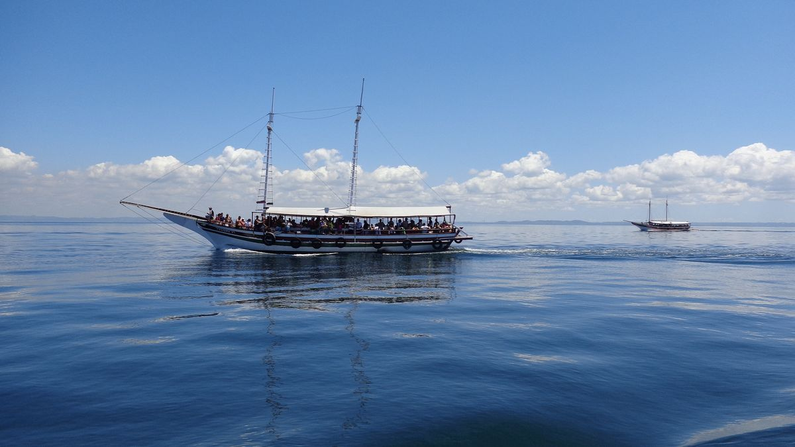

Política
Cancelamento e reembolso
As regras dependem de onde a compra foi feita e de quanto tempo falta para o passeio. Para pedir um cancelamento, fale com a gente pelo WhatsApp.

Antes de embarcar
O nosso transfer é semiterrestre. Escolhemos esse formato porque ele entrega mais conforto e mais segurança durante toda a viagem.
Quer dizer que a viagem combina trechos de barco e trechos de estrada. As conexões entre um e outro são organizadas pela nossa equipe, do começo ao fim.
São 3 horas. Contamos o tempo a partir do Terminal Marítimo de Salvador porque é de lá que saem também as outras opções, como o catamarã.
Sim. Buscamos no Aeroporto de Salvador, no hotel em que você está hospedado ou recebemos você diretamente no Terminal Marítimo. Os horários do aeroporto e do terminal estão na página de transfers. A hora da busca no hotel é combinada na reserva.
Sim, com carros, vans e ônibus, conforme o tamanho do grupo.
É. O transfer funciona nos 365 dias do ano, justamente para você ir e voltar de Boipeba quando quiser.
Depende do passeio. Morro de São Paulo em um dia, Ilha dos Frades e Itaparica, Praia do Forte e o day use em Itaparica saem de Salvador. A volta às ilhas, Garapuá, o quadriciclo e a Gamboa saem de Morro de São Paulo. A volta à ilha sai de Boipeba.
Não. Quando existem, são pagas à parte: a taxa de embarque do day use em Morro de São Paulo é de R$ 20, e a entrada na Ilha dos Frades custa R$ 34,90.
Na volta às ilhas de Tinharé e no passeio de escuna a Frades e Itaparica, pode. Para os outros passeios, pergunte na reserva.
Roupa de banho, protetor solar, chapéu, toalha e um documento com foto. Para os passeios de barco, uma muda de roupa seca ajuda na volta.
Esses valores são informados diretamente pela nossa equipe. Chame no WhatsApp e respondemos com o valor para a sua data e o seu grupo.
Pelo WhatsApp. Toque em Reservar, escolha o passeio, a data e o número de pessoas, e a mensagem já chega pronta para a nossa equipe. Confirmamos a disponibilidade, o horário e o ponto de encontro.
Cartão de crédito e de débito, de todas as bandeiras, PIX e transferência bancária.
Todos os dias, inclusive domingos e feriados, das 7h às 22h.
Política
As regras dependem de onde a compra foi feita e de quanto tempo falta para o passeio. Para pedir um cancelamento, fale com a gente pelo WhatsApp.
Não achou a resposta?
Atendemos pelo WhatsApp todos os dias, das 7h às 22h.